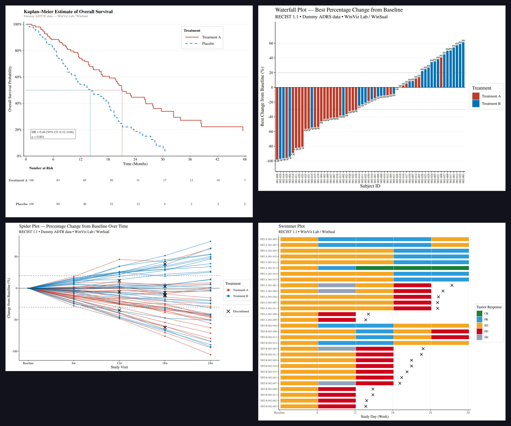

A Statistical Programmer’s Confession: RECIST 1.1 Is Not Just Numbers
If you ask me what plots I have made most often in clinical trials, my answer would be: Spider Plot, Swimming Plot, Waterfall Plot, and KM Plot.
These are the figures you will see in almost every oncology study — during the trial, in the final CSR, and even in publications. They carry meaning across data monitoring, data cleaning, and efficacy evaluation.
RECIST 1.1 Is Not Just Arithmetic
In oncology clinical trials, we often say RECIST 1.1 is the gold standard. But as a statistical programmer, I have learned that it is much more than simple arithmetic. The real challenge lies in dimensional precision, time consistency, and the most overlooked part — CRF design logic.
Three Dimensions You Must Understand
Lesion Categorization
Accurately separate target lesions (measurable, up to 5 total, max 2 per organ) from non-target lesions (qualitative only). This is the foundation of everything that follows.
Practical insight: Many CRF design problems start here. If a lesion is defined as a target lesion at baseline, it must be measurable at every follow-up visit. When “unable to assess” appears frequently on the Target Lesion page, it usually means the selection logic or data definition had a problem from the beginning. This kind of issue is often buried in the CRF design before the study even starts.
Anatomy Measurement
- General lesions: measure the longest diameter
- Lymph nodes: measure the short axis
This is one of the most common mistakes I see during data cleaning — the short axis is the correct measurement to determine whether a lymph node has returned to normal.
Baseline and Change
By calculating the percentage change in the sum of diameters (SoD), we define:
| Response | Definition |
|---|---|
| CR | All target lesions disappear |
| PR | SoD decreases ≥ 30% from baseline |
| PD | SoD increases ≥ 20% from nadir AND ≥ 5 mm absolute, or new lesion appears |
| SD | Between PR and PD |
Time Logic: Confirmation and SD Threshold
The most demanding part of data monitoring is managing time carefully:
Confirmation: After the first CR or PR, a follow-up scan is usually required around 4 weeks later. An unconfirmed PR must be handled carefully in data annotation.
SD time threshold: Stable disease (SD) must meet a minimum time interval defined in the protocol (usually at least 6–8 weeks from baseline). Otherwise, it may be classified as not evaluable (NE).
Why These Four Plots Are “Live Documents”
As data accumulates during the trial, these plots grow with it — and help us catch data issues in real time.

Waterfall Plot — A “Snapshot” of Efficacy
Shows each patient’s best percentage change from baseline, ordered from best to worst.
- Quickly spots outliers and flags potential data entry errors
- BOR labels on each bar let you check whether BOR and PCHG are logically consistent
- Colour by treatment arm — no need to split the plot to compare two groups
→ Most used for: data entry error detection, early ORR estimation, DMC reports
Swimming Plot — A “Full Picture” of the Patient Journey
Shows each patient’s complete on-study timeline, with colour blocks for each assessment interval.
- Colour blocks represent tumor response (CR/PR/SD/PD) and clearly show duration of response (DoR)
- The ✕ marker is placed between assessments — after the last visit but before the next scheduled one — which better reflects clinical reality
- Optional event markers (e.g. First PR, First PD, Death) can be added to highlight key clinical events
→ Most used for: DoR presentation, DMC overview reports, confirmed PR annotation, individual patient data review
KM Curve — Survival Over Time
The Kaplan-Meier curve shows the probability of survival (or event-free status) over time by treatment arm.
- HR and p-value annotation directly on the plot
- Risk table aligned to x-axis time points
- Validated against Phase III CSR results (HR = 0.79, p = 0.0145)
→ Most used for: primary endpoint reporting, regulatory submissions, publication figures
Data Is Not Just Presentation — It Is Governance
Through years of experience, I have learned that a well-designed plot makes data problems impossible to hide.
We are not just making charts. We are having a conversation with the data through these visualisations. Updating these plots regularly ensures that every response assessment is backed by the most rigorous RECIST 1.1 logic.
This is what I have always believed — let the data tell the most honest and timely story.
R Templates on WinViz Lab
All four templates are built with open-source R tools:
# Core packages used across all four plots
library(ggplot2) # plotting
library(dplyr) # data manipulation
library(survival) # KM curve (survfit)
library(reporter) # RTF output for regulatory submissionsKey design decisions shared across all templates:
- Dynamic arm levels —
levels(factor(adrs$TRTA))instead of hardcoded values - Consistent colour mapping —
setNames(c(COL_A, COL_B), arm_levels) - RTF output — publication-ready via the
reporterpackage - PNG + RTF dual output — for both web sharing and submission packages
The templates are available on WinViz Lab — free to use and adapt: